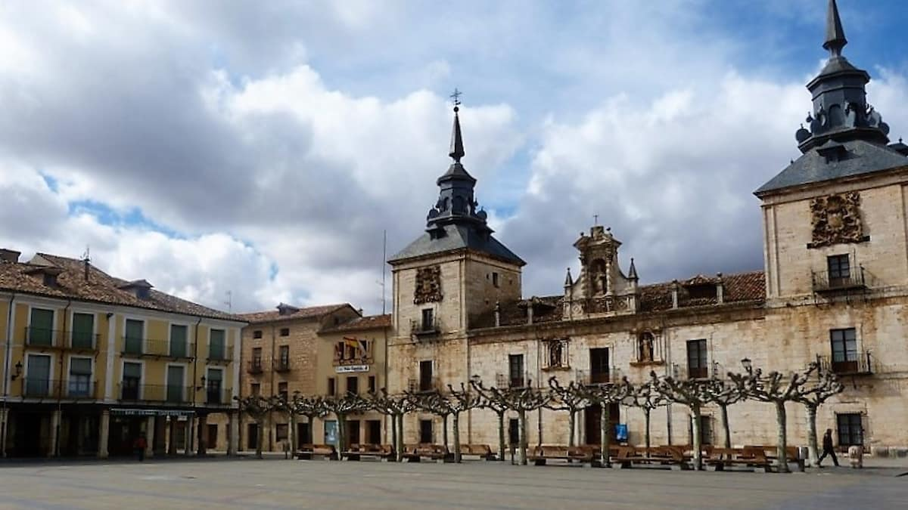

Desde 1101 hasta el XVIII, la Catedral de Osma es un viaje a través de los siglos. Construida sobre una anterior románica que se quedó pequeña porque el Burgo se convirtió en un centro de poder brutal. Lo que ves hoy es mayoritariamente del siglo XIII: una nave central gótica que busca elevar el espíritu hacia lo divino. La torre barroca de 72 metros, terminada en 1744, es un faro de fe visible desde toda la meseta.
Custodiado en la Catedral, este manuscrito es una de las representaciones del Apocalipsis más bellas de Europa. Sus ilustraciones en azules y rojos intensos parecen neones medievales. Una joya que lleva siglos guardando los misterios del fin del mundo.
Fundada por el Obispo Pedro Álvarez de Acosta, fue el corazón del conocimiento español hasta 1841. Por sus aulas pasaron personajes como Jovellanos. El edificio se diseñó con un patio de doble arquería que es una joya de la geometría renacentista, pensado para que los estudiantes debatieran mientras caminaban bajo sus arcos.
Es el corazón de El Burgo. Aquí se concentraba el poder civil (Ayuntamiento), el religioso y el asistencial (Hospital de San Agustín). Los soportales eran el lugar donde se leían edictos reales y se cerraban tratos comerciales de lana y trigo que enriquecieron la región.
Las murallas del siglo XV protegen una ciudad que fue frontera clave entre cristianos y musulmanes. Sobre el cerro se encuentra Uxama Argaela, la ciudad celtíbera y romana original, donde todavía puedes ver cisternas de hace 2.000 años. El castillo, del siglo X, fue una pieza clave en la línea defensiva del Duero.
No es panceta, es ingeniería. La corteza debe tener burbujas y crujir de forma que se oiga en la mesa de al lado, mientras la carne debe estar tierna como mantequilla.
Es un evento de logística gastronómica único. Se recrea el rito ancestral del cerdo con dulzaineros y un banquete que es una lección de historia viva.
Busca los "sobadillos" en las pastelerías de la Calle Mayor; son recetas de siglos que reconfortaban a los antiguos viajeros.
El templo de los asados y las carnes de verdad. Aquí no hay trampa ni cartón: solo producto de primerísima calidad tratado con el respeto que merece la tradición castellana.